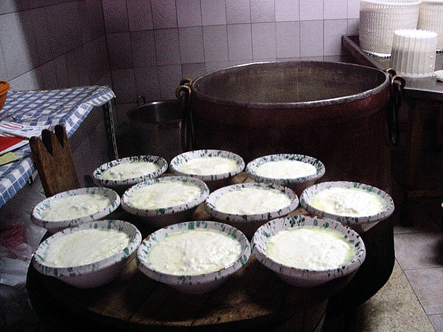
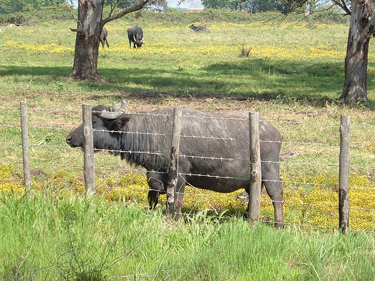
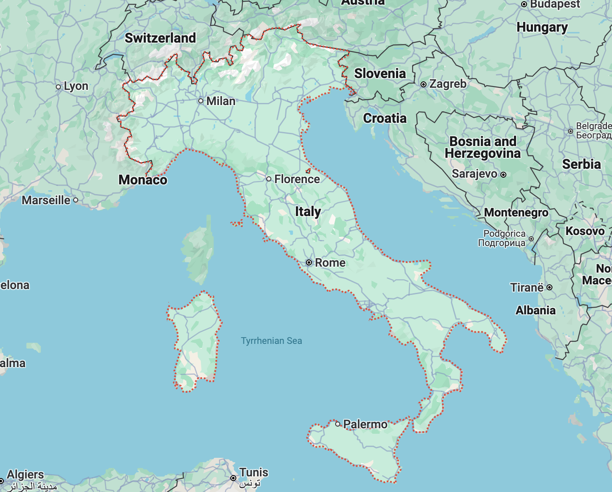

- Home
- Cheese



RICOTTA
- Region: Italian
- Milk: Cow, Sheep, Buffalo
- Texture: Soft
Originating from Italy, ricotta is a yellowish-white fresh cheese known for its sweet and clean flavor. While it closely resembles the appearance of cottage cheese, ricotta has its own distinct composition. It is made from a liquid byproduct of cheese production known as whey. Once the whey is heated, the residue is then extracted through a cheesecloth. Unlike other cheeses, ricotta is not salted or ripened during the process and is a popular ingredient for both sweet and savory dishes.
More Info